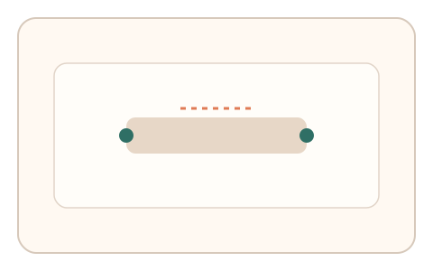
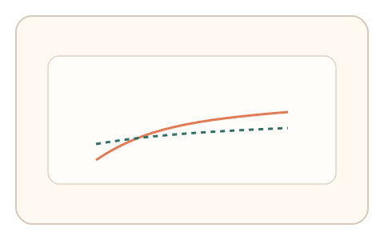
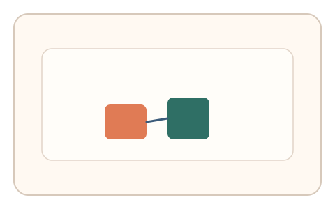

#164
Reverse Brainstorming - Round 3
已扩展
会话隐变量指纹
每次会话注入动态隐变量，评估用户适应曲线与纠偏模式。
概念原文
每次验证都注入一组不可感知的动态隐变量（微延迟/摩擦/节奏），并评估用户对这些隐变量的适应曲线与纠偏模式。
行为样本库难以覆盖“会话级动态变量”，统计逼近失效。
研究背景
会话级隐变量（微延迟、摩擦、节奏）在用户不可感知的层面影响操控。真实用户会产生稳定的适应曲线与回拉模式，而样本库难以覆盖这些动态变化。
核心机制
- 在会话内注入动态隐变量。
- 记录误差与适应过程。
- 提取适应斜率与纠偏结构。
- 与人类分布与设备基线比对。
用户流程
- 步骤 1：用户开始交互任务。
- 步骤 2：系统动态调整隐变量。
- 步骤 3：系统分析适应曲线并判定。
判定信号
适应斜率与稳定时间
真实适应呈连续收敛曲线。
纠偏回拉结构
微纠偏反映闭环反馈特性。
判定逻辑
适应曲线需符合人类区间；无适应或瞬时收敛判异常。
对抗面
- 脚本预测隐变量并预补偿
- 回放已采集的适应轨迹
防御与缓解
- 会话级随机化隐变量序列
- 加入多阶段变化提升拟合成本
- 与其他信号交叉验证
可达性与风险
提供低强度隐变量与替代任务。
- 低性能设备适应曲线失真
- 隐变量过强影响完成率
可视化状态

状态 1：隐变量注入
会话内动态变化参数。

状态 2：适应轨迹
记录误差回落过程。

状态 3：指纹判定
对比适应曲线与纠偏结构。
参考资料
Motor adaptation
说明适应曲线与误差修正。
Control system
说明动态系统与反馈控制。